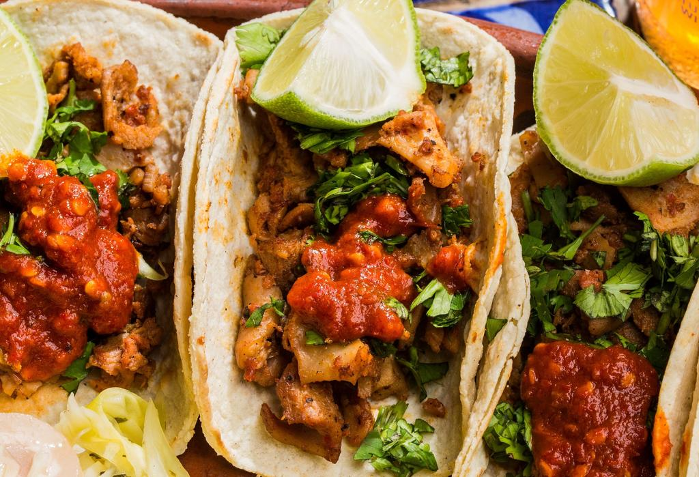
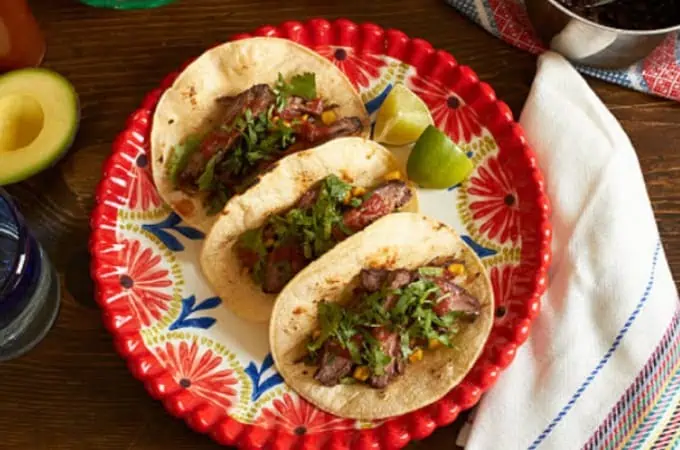
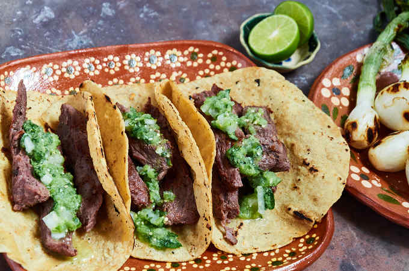

Deléitate con el auténtico sabor mexicano con nuestros tacos de suadero, preparados con carne tierna y jugosa cocinada a fuego lento para resaltar su inigualable sabor. Servidos en tortillas calientes y acompañados con cilantro, cebolla fresca y nuestra salsa especial, cada bocado es una explosión de tradición
Saborea la sencillez y la perfección con nuestros tacos de bistek. Preparados con carne de res fresca, sazonada y cocinada al momento en la plancha para lograr ese equilibrio ideal entre jugosidad y sabor. Servidos en tortillas calientes, acompañados con cilantro, cebolla fresca y una variedad de salsas caseras, estos tacos son un clásico que nunca decepciona
Disfruta de la excelencia de la carne de calidad con nuestros tacos de arrachera. Cada pieza está marinada a la perfección y asada al punto justo para conservar su suavidad y sabor inigualable. Acompañados con guacamole, cebolla asada y una salsa que eleva el platillo, son la definición de un taco premium
